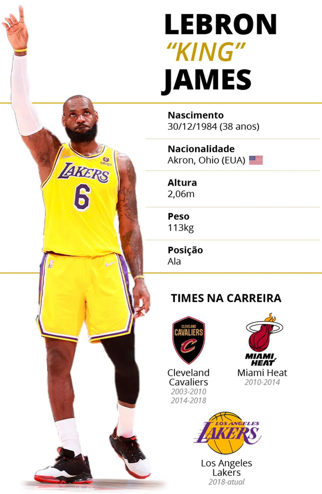

Carreira de Lebron James
LeBron Raymone James é um basquetebolista norte-americano que atua como ala pelo Los Angeles Lakers. Apelidado de King James, é amplamente reconhecido como um dos maiores jogadores de basquetebol de todos os tempos, ocupando a segunda posição na lista divulgada pela ESPN em 2020, atrás apenas de Michael Jordan.
Com 38 anos de idade, LeBron passou por três times na NBA: Cleveland Cavaliers, Miami Heat e Los Angeles Lakers, sua equipe atual. Foi quatro vezes campeão da NBA e eleito MVP das finais nas quatro ocasiões (2012, 2013, 2016 e 2020). Também por quatro vezes foi eleito o MVP da temporada (jogador mais valioso).

Prêmios e Homenagens
National Basketball Association:
4x Campeão da NBA: 2012, 2013, 2016 e 2020
4x NBA Finals Most Valuable Player (MVP das Finais): 2012, 2013, 2016 e 2020
4x NBA Most Valuable Player (MVP): 2009, 2010, 2012 e 2013
NBA Rookie of the Year: 2004
NBA All-Rookie Team: 2004
NBA Scoring Champion: 2008
NBA Assists Leader: 2020
NBA Citizenship Award: 2017
3x NBA All-Star Game MVP: 2006, 2008 e 2018
19x NBA All-Star: 2005, 2006, 2007, 2008, 2009, 2010, 2011, 2012, 2013, 2014, 2015, 2016, 2017, 2018, 2019, 2020, 2021, 2022 e 2023
19x All-NBA Team:
Primeiro Time: 2006, 2008, 2009, 2010, 2011, 2012, 2013, 2014, 2015, 2016, 2017, 2018 e 2020
Segundo Time: 2005, 2007 e 2021
Terceiro Time: 2019, 2022 e 2023
6x NBA All-Defensive Team:
Primeiro Time: 2009, 2010, 2011, 2012 e 2013
Segundo Time: 2014
Seleção dos Estados Unidos:
Jogos Olímpicos:
Medalha de Bronze: 2004
Medalha de Ouro: 2008
Medalha de Ouro: 2012
Campeonato Mundial:
Medalha de Bronze: 2006
Copa América de Basquete:
Medalha de Ouro: 2007
Outras Honrarias:
Atleta do Ano da Associated Press: 2013, 2016, 2018 e 2020
Atleta do Ano da Sports Illustrated: 2012, 2016 e 2020
Atleta do Ano da Seleção Americana: 2012
ESPY de Melhor Jogador da NBA: 2007, 2009, 2012, 2013, 2016, 2017 e 2018
75 Maiores Jogadores da História da NBA: 2021
100 Maiores Personalidades da Time: 2005, 2013, 2017 e 2019